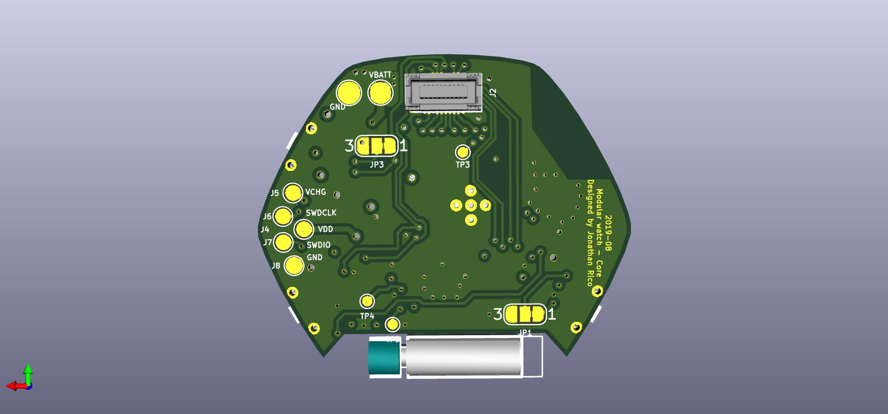
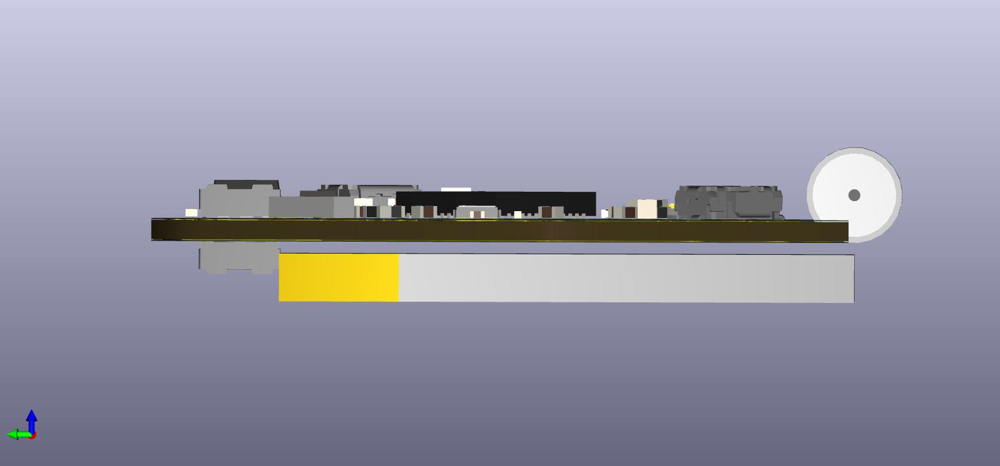

Modular wristwatch system

Summary
Designed as a follow-up to Ledwatch.
A modular (smart)watch system. The concept is splitting modern smartwatch functions into modular PCBs with mezzanine connectors, to be able to try different sensor/mcu/display combos without having to redesign everything from scratch each time.
A minimum system would be 2 boards: core board + display board. This is what I have begun designing, with a nRF52-based core board and a serial RGB led display board.
But one can imagine for example:
- Top board: Color LCD + driver, NFC transceiver + coil
- Middle board: ARM SoC w/ BLE & secure coprocessor, IMU
- Bottom board: Heart-rate sensor, wireless charger
- LiPo battery
Or for a lower-power system:
- Top board: Segment LCD
- Middle board: MSP430 MCU, low power accelerometer
- Lithium coin cell
The one I’m building right now:
- Top: 24 RGB leds, 5V DCDC, ambient light sensor
- Middle: ARM SoC w/ BLE, 3V DCDC, accelerometer, Motor driver, LiPo charger
- LiPo battery
Specs
Components:
- BLE SoC: nRF52832
- Leds: APA102-2020
- Accelerometer: LIS3DH
- Charger: bq21040
- Core DCDC: TPS62743 (mistake in schematic it seems)
- LED DCDC: TPS610997 (5V fixed)
- 3-5V level shifter: NTB0102GF,115
- Tactile switches: EVQ-P3401P
- Pusbuttons: Casio F-91W (using just the buttons & mini o-rings)
- Ambient light sensor: APDS-9306-065
- Motor driver: LC898302AXA
- Load switches: FPF1203LUCX
- Battery: 125mAh LiPo
- Connector female: 513380274
- Connector male: 559090274
- Devkit & programmer/debugger: nRF52-DK
Project files: (as-is, pcbs have not been built yet)
Core board:
Schematic PDF
Kicad project ZIP
Display board:
Schematic PDF
Kicad project ZIP
Charger/Debug board:
Schematic PDF
Kicad project ZIP
Board assembly: Exploded view PDF
Mechanical
The body was designed in SolidWorks, I tried another workflow for designing the PCB & enclosure:
- Sketch out watch shape in Inkscape
- Create rough component shape to test fit
- Refine watch shape
- Design schematic in KiCad
- Import watch shape in KiCad layout
- Create rough 3d models for all components
- Place & route PCB, checking 3d view for conflicts
- Export STEP file from KiCad layout
- Export DXF from inkscape
- Import STEP of the two PCBs in SolidWorks
- Test fit of PCBs
- Import DXF in SolidWorks, sketch a rough watch body volume
- Align PCB models with watch body
- Finish designing watch body
Again, printed at shapeways, and the models seems to fit quite nicely, I guess we’ll see for sure when I actually build it entirely !
Having the (rough) 3d models of the component was very helpful for two reasons:
- I could verify that my footprints were correct
- It really helped for component placement.
To be able to quickly generate package models, I finally bit the bullet, learned a bit of OpenSCAD, and created basic shapes (BGA, DFN, QFN) that could be easily reprogrammed. You can download the small library I made for this project here:
OpenSCAD source files ZIP
Core board






Display board

display & core connected:

Debug board


Project status
Due to my recent job change & relocation to Norway, I had to give away some essential tools before leaving (limited space in suitcases), and as such, this project is now on pause.
I will try to get a headstart on programming though, as it doesn’t require any hardware except the dev kit which I already have.
Things to do:
- Finish cradle 3d model
- Print cradle
- Send the PCBs to fab
- Finish the BOM
- Buy the components
- Reflow the components (farewell my soldering station..)
- Test & bring-up the core board
- Test the display board
- Program the watch
- Make a small android companion app